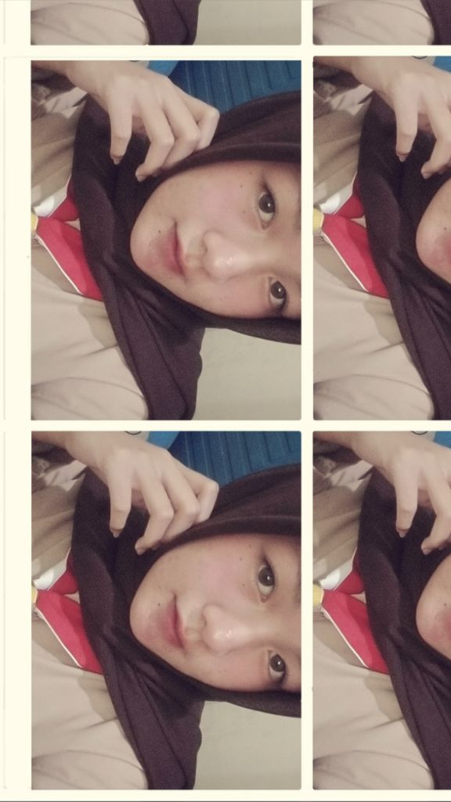

Personal Profile
Wintang Aulia
Wulandari
Welcome to my little corner of the world

Biodata
Nama
Wintang Aulia Wulandari
Kelas
XI TKJ 3
No. Absen
32
Riwayat Pendidikan
01
PAUD Tunas Bhakti
02
SDN Pacet
03
SMPN 3 Reban
04
SMKN 1 Blado
Tentang Aku
Kelebihan
Mau belajar hal baru dan terus berusaha mengembangkan diri.
Hobi
Mendengarkan musik dan menikmati berbagai suasana lewat lagu.
Ekskul
Modern Dance
“Jangan takut gagal,
teruslah menjadi 1% lebih baik
setiap harinya.”